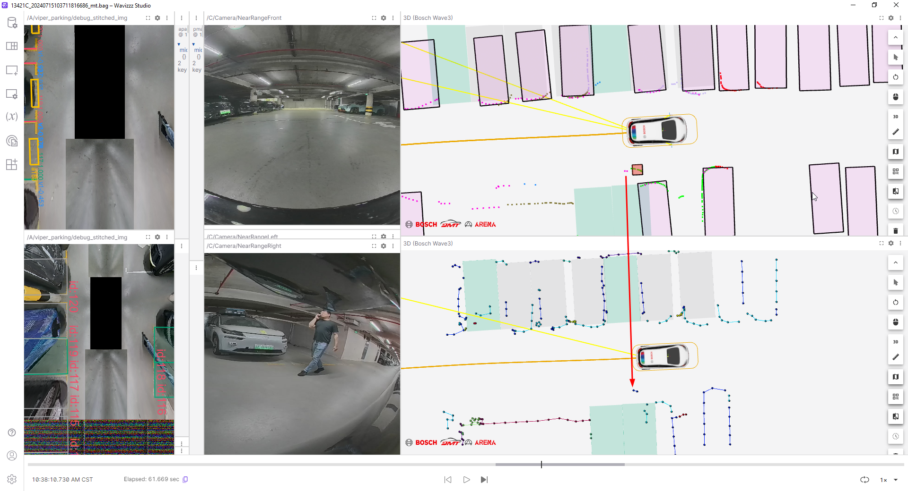

USS Residue and Misundrsestanding Filtering Test 240715
[9:01 PM] TIAN Jincheng (BCSC/EPA1, XC-AS/PJ-WIN-VER1)
datalink：\\BOSCH.COM\DfsRB\DfsCN\loc\szh\Common\OneWeekPark\OT26\0715
OT26 is based on DEV0715
Static obstacles misunderstood and eliminate:
20240715103711 Anti -deceleration belt, pedestrian misunderstanding
question:
Occasionally USS residual exclusion failure
20240715103711 Anti -deceleration belt, pedestrian misunderstanding

uss unknown nodes
20240715103711 Anti -deceleration belt, pedestrian misunderstanding
Exercise target USS residual removal:
For sports residues for sports vehicles and pedestrians, the exclusion effect is obvious.Almost all the residual USS were removed.
20240715163200 manually, pedestrians around
figure 1
20240715163624 manually, the vehicle passes through
figure 2
question:
When the distance between DF Bbox and VIPER FreeSpace is too different, the DF Bbox and Viper-FS cannot be associated, so VIPER-FS Nodes cannot be deleted.
20240715163200 manually, pedestrians around